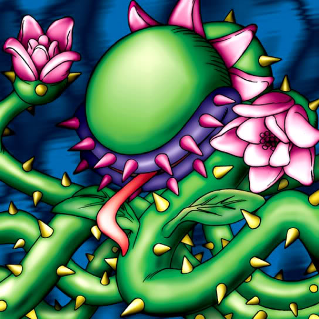

Man-Eating Plant

STATS
ATK: 800
DEF: 600DECK COST
Deck Cost per Card: 14Fusion List (22 Possible Fusions)
- Man-Eating Plant + Air Marmot of Nefariousness = Flower Wolf
- Man-Eating Plant + Arlownay = Queen of Autumn Leaves
- Man-Eating Plant + Baby Dragon = B. Dragon Jungle King
- Man-Eating Plant + Dancing Elf = Queen of Autumn Leaves
- Man-Eating Plant + Enchanting Mermaid = Queen of Autumn Leaves
- Man-Eating Plant + Hard Armor = Bean Soldier
- Man-Eating Plant + Gorgon Egg = Rose Spectre of Dunn
- Man-Eating Plant + Kagemusha of the Blue Flame = Bean Soldier
- Man-Eating Plant + Key Mace = Queen of Autumn Leaves
- Man-Eating Plant + Little Chimera = Flower Wolf
- Man-Eating Plant + Milus Radiant = Flower Wolf
- Man-Eating Plant + Mushroom Man #2 = Bean Soldier
- Man-Eating Plant + Mystical Sheep #1 = Flower Wolf
- Man-Eating Plant + Queen's Double = Queen of Autumn Leaves
- Man-Eating Plant + Serpent Marauder = Snakeyashi
- Man-Eating Plant + Shadow Specter = Wood Remains
- Man-Eating Plant + Silver Fang = Flower Wolf
- Man-Eating Plant + Swordsman from a Foreign Land = Bean Soldier
- Man-Eating Plant + The Little Swordsman of Aile = Bean Soldier
- Man-Eating Plant + Torike = Flower Wolf
- Man-Eating Plant + Yamatano Dragon Scroll = B. Dragon Jungle King
- Man-Eating Plant + Zombie Warrior = Pumpking the King of Ghosts